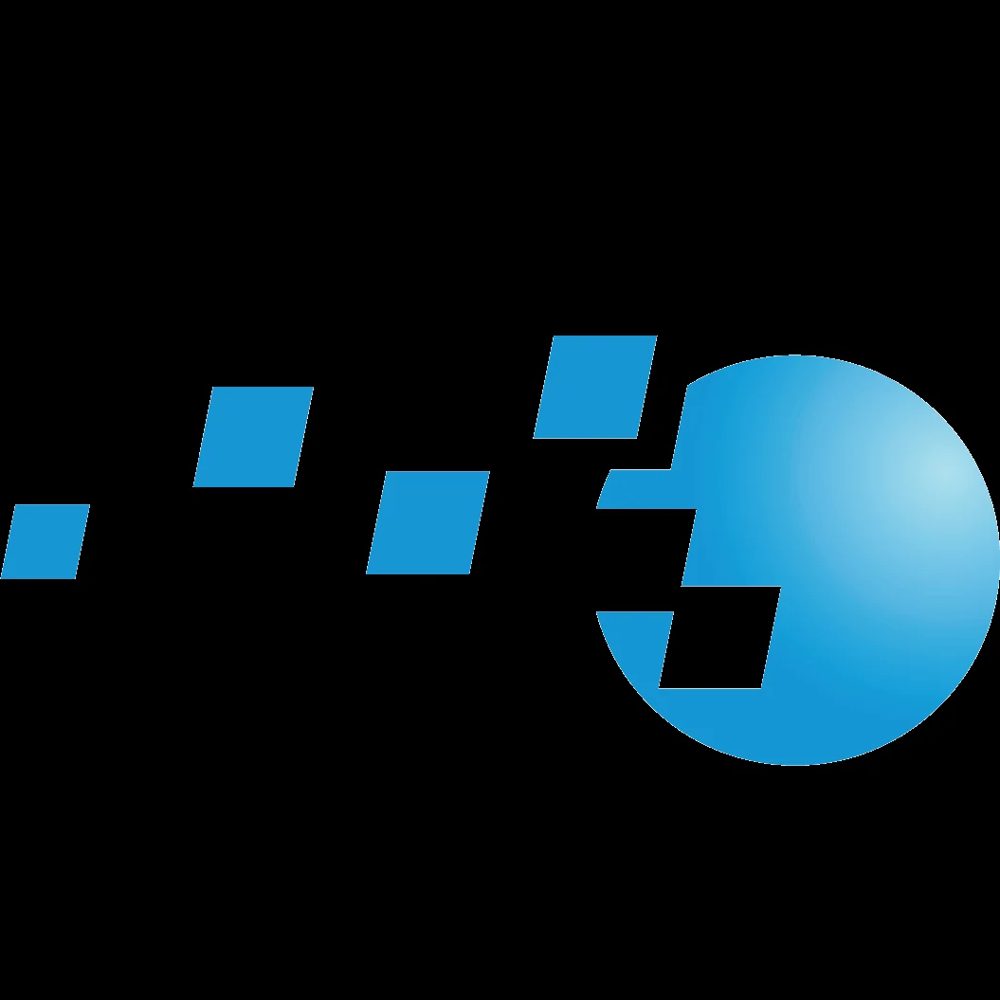

Simulation Curriculum
Creators of Starry Night, the world's most realistic astronomy simulation.
Partners
GAAC is organized by STEM October Astronomy Club and supported by educational partners that help participants keep learning after the competition ends.
Organizer of GAAC and the community behind the challenge.

Creators of Starry Night, the world's most realistic astronomy simulation.

Rocket-building simulation that teaches orbital mechanics and aerospace.

Computational intelligence and knowledge engine powering modern discovery.

Leader in problem-solving education for gifted students worldwide.

Software for connecting to and controlling automated telescopes.

Astrophotography solutions for capturing the cosmos.

Powerful open-source astronomical image processing software.
Physics-based space simulator for exploring the universe.

Software app for connecting to and controlling automated telescopes.